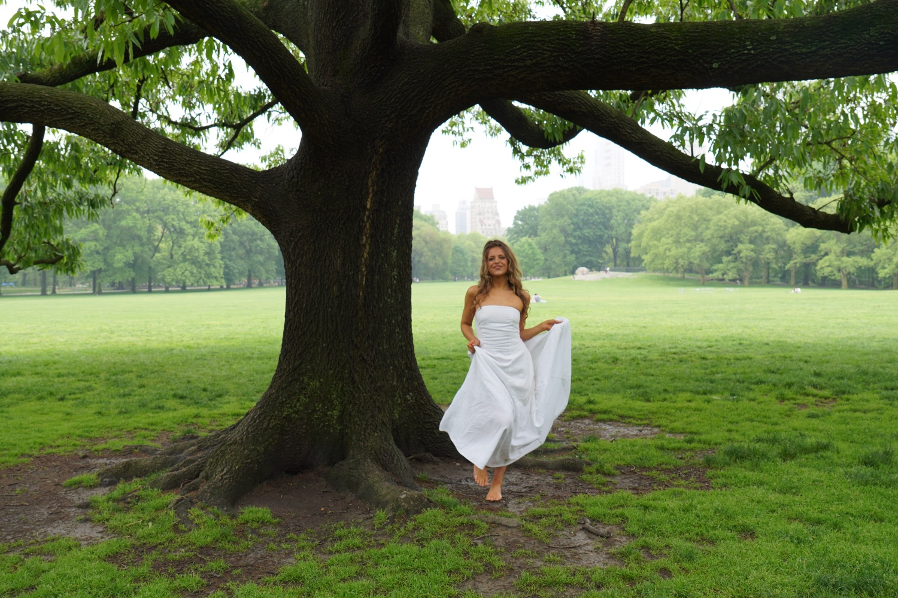
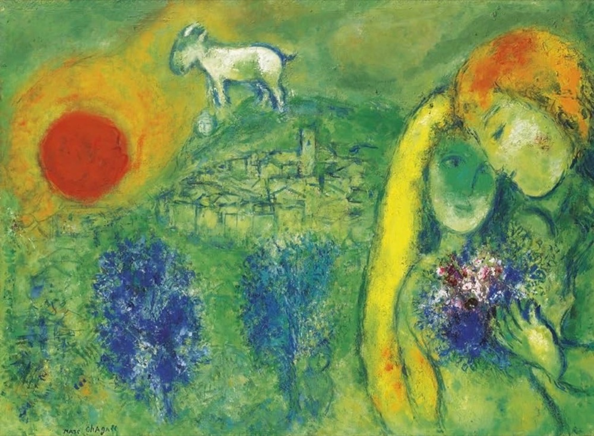

Since I could, I was always trying to draw everything around me.
My style hasn't changed much since then. I still love creating playful whimsical art usually around themes of encouragement, hope, and compassion.
My favorite thing in the world is to collaborate with others and bring their vision to life. I love to hear people's stories and capture sentimental themes and important nuances that honor their richness through art.
Most of my inspiration comes from nature and people, but I'm also endlessly inspired by books about what it means to be human, from biographies to spiritual writing, and, of course, by the art of other incredible artists.
The three works that have left the greatest impression on my art are Marc Chagall's The Lovers of Vence, Assata Shakur's autobiography, and Gary Zukav's The Seat of the Soul. The Lovers of Vence hung in my parents' bedroom when I was growing up, and I've always felt connected to its fluidity and freedom. I read Assata Shakur's autobiography in high school, and her poem “Affirmation” continues to ground so much of my conviction to hold onto hope through darkness. I read The Seat of the Soul during my freshman year of college, and it made me much more intentional about choosing to operate and create from a place of courage and love rather than fear.
If you would like to order a print or want to collaborate I would love to connect.


“I believe in living. I believe in the sweat of love.”